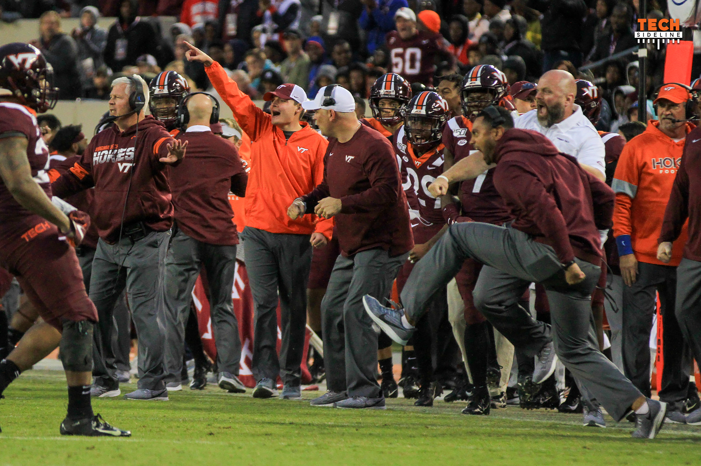

About Me
Hello people. This website is about my life and hobbies! That is me in the orange jacket!
I was born in 1998 in Colonial Heights, Virginia. I have one sister named Paige, a dog named Reese, and a cat named Orange Cat. I received my B.A. from Virginia Tech in May 2020 and now I am pursuing my Master's in Communication. I am Dr. Horning's research assistant working on his News Transparency Project.
I used to be a basketball manager at Virginia Tech, but then I moved to a position with the football team! Specifically, I work with the quarterbacks and assist with practice everyday. I really enjoy being on the field for games!
Things I like
- Playing my Guitar
- Playing video games
- Sports